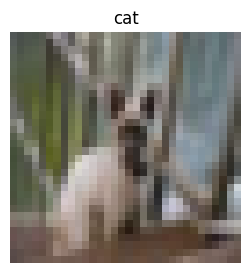
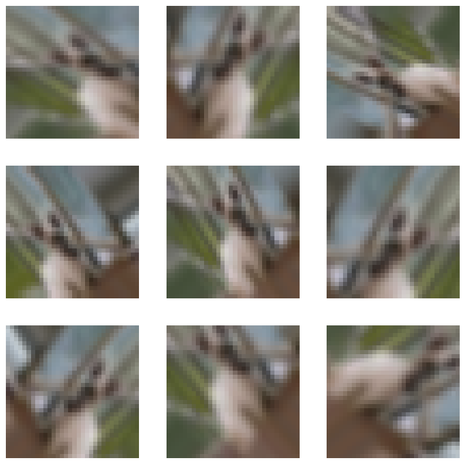
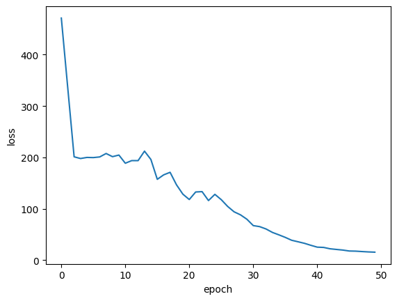
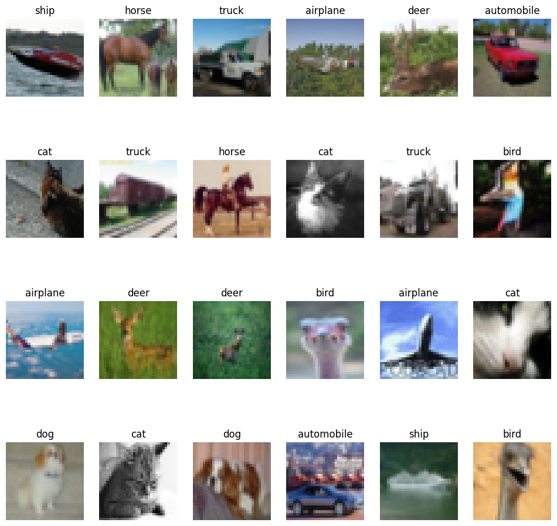
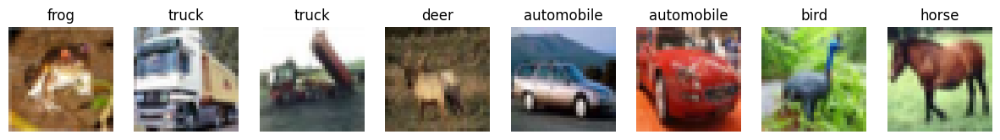

Semantic Image Clustering
Author: Khalid Salama
Date created: 2021/02/28
Last modified: 2021/02/28
Description: Semantic Clustering by Adopting Nearest neighbors (SCAN) algorithm.

Introduction
This example demonstrates how to apply the Semantic Clustering by Adopting Nearest neighbors (SCAN) algorithm (Van Gansbeke et al., 2020) on the CIFAR-10 dataset. The algorithm consists of two phases:
- Self-supervised visual representation learning of images, in which we use the simCLR technique.
- Clustering of the learned visual representation vectors to maximize the agreement between the cluster assignments of neighboring vectors.
Setup
import os
os.environ["KERAS_BACKEND"] = "tensorflow"
from collections import defaultdict
import numpy as np
import tensorflow as tf
import keras
from keras import layers
import matplotlib.pyplot as plt
from tqdm import tqdm
Prepare the data
num_classes = 10
input_shape = (32, 32, 3)
(x_train, y_train), (x_test, y_test) = keras.datasets.cifar10.load_data()
x_data = np.concatenate([x_train, x_test])
y_data = np.concatenate([y_train, y_test])
print("x_data shape:", x_data.shape, "- y_data shape:", y_data.shape)
classes = [
"airplane",
"automobile",
"bird",
"cat",
"deer",
"dog",
"frog",
"horse",
"ship",
"truck",
]
x_data shape: (60000, 32, 32, 3) - y_data shape: (60000, 1)
Define hyperparameters
target_size = 32 # Resize the input images.
representation_dim = 512 # The dimensions of the features vector.
projection_units = 128 # The projection head of the representation learner.
num_clusters = 20 # Number of clusters.
k_neighbours = 5 # Number of neighbours to consider during cluster learning.
tune_encoder_during_clustering = False # Freeze the encoder in the cluster learning.
Implement data preprocessing
The data preprocessing step resizes the input images to the desired target_size and applies
feature-wise normalization. Note that, when using keras.applications.ResNet50V2 as the
visual encoder, resizing the images into 255 x 255 inputs would lead to more accurate results
but require a longer time to train.
data_preprocessing = keras.Sequential(
[
layers.Resizing(target_size, target_size),
layers.Normalization(),
]
)
# Compute the mean and the variance from the data for normalization.
data_preprocessing.layers[-1].adapt(x_data)
Data augmentation
Unlike simCLR, which randomly picks a single data augmentation function to apply to an input image, we apply a set of data augmentation functions randomly to the input image. (You can experiment with other image augmentation techniques by following the data augmentation tutorial.)
data_augmentation = keras.Sequential(
[
layers.RandomTranslation(
height_factor=(-0.2, 0.2), width_factor=(-0.2, 0.2), fill_mode="nearest"
),
layers.RandomFlip(mode="horizontal"),
layers.RandomRotation(factor=0.15, fill_mode="nearest"),
layers.RandomZoom(
height_factor=(-0.3, 0.1), width_factor=(-0.3, 0.1), fill_mode="nearest"
),
]
)
Display a random image
image_idx = np.random.choice(range(x_data.shape[0]))
image = x_data[image_idx]
image_class = classes[y_data[image_idx][0]]
plt.figure(figsize=(3, 3))
plt.imshow(x_data[image_idx].astype("uint8"))
plt.title(image_class)
_ = plt.axis("off")

Display a sample of augmented versions of the image
plt.figure(figsize=(10, 10))
for i in range(9):
augmented_images = data_augmentation(np.array([image]))
ax = plt.subplot(3, 3, i + 1)
plt.imshow(augmented_images[0].numpy().astype("uint8"))
plt.axis("off")

Self-supervised representation learning
Implement the vision encoder
def create_encoder(representation_dim):
encoder = keras.Sequential(
[
keras.applications.ResNet50V2(
include_top=False, weights=None, pooling="avg"
),
layers.Dense(representation_dim),
]
)
return encoder
Implement the unsupervised contrastive loss
class RepresentationLearner(keras.Model):
def __init__(
self,
encoder,
projection_units,
num_augmentations,
temperature=1.0,
dropout_rate=0.1,
l2_normalize=False,
**kwargs
):
super().__init__(**kwargs)
self.encoder = encoder
# Create projection head.
self.projector = keras.Sequential(
[
layers.Dropout(dropout_rate),
layers.Dense(units=projection_units, use_bias=False),
layers.BatchNormalization(),
layers.ReLU(),
]
)
self.num_augmentations = num_augmentations
self.temperature = temperature
self.l2_normalize = l2_normalize
self.loss_tracker = keras.metrics.Mean(name="loss")
@property
def metrics(self):
return [self.loss_tracker]
def compute_contrastive_loss(self, feature_vectors, batch_size):
num_augmentations = keras.ops.shape(feature_vectors)[0] // batch_size
if self.l2_normalize:
feature_vectors = keras.utils.normalize(feature_vectors)
# The logits shape is [num_augmentations * batch_size, num_augmentations * batch_size].
logits = (
tf.linalg.matmul(feature_vectors, feature_vectors, transpose_b=True)
/ self.temperature
)
# Apply log-max trick for numerical stability.
logits_max = keras.ops.max(logits, axis=1)
logits = logits - logits_max
# The shape of targets is [num_augmentations * batch_size, num_augmentations * batch_size].
# targets is a matrix consits of num_augmentations submatrices of shape [batch_size * batch_size].
# Each [batch_size * batch_size] submatrix is an identity matrix (diagonal entries are ones).
targets = keras.ops.tile(
tf.eye(batch_size), [num_augmentations, num_augmentations]
)
# Compute cross entropy loss
return keras.losses.categorical_crossentropy(
y_true=targets, y_pred=logits, from_logits=True
)
def call(self, inputs):
# Preprocess the input images.
preprocessed = data_preprocessing(inputs)
# Create augmented versions of the images.
augmented = []
for _ in range(self.num_augmentations):
augmented.append(data_augmentation(preprocessed))
augmented = layers.Concatenate(axis=0)(augmented)
# Generate embedding representations of the images.
features = self.encoder(augmented)
# Apply projection head.
return self.projector(features)
def train_step(self, inputs):
batch_size = keras.ops.shape(inputs)[0]
# Run the forward pass and compute the contrastive loss
with tf.GradientTape() as tape:
feature_vectors = self(inputs, training=True)
loss = self.compute_contrastive_loss(feature_vectors, batch_size)
# Compute gradients
trainable_vars = self.trainable_variables
gradients = tape.gradient(loss, trainable_vars)
# Update weights
self.optimizer.apply_gradients(zip(gradients, trainable_vars))
# Update loss tracker metric
self.loss_tracker.update_state(loss)
# Return a dict mapping metric names to current value
return {m.name: m.result() for m in self.metrics}
def test_step(self, inputs):
batch_size = keras.ops.shape(inputs)[0]
feature_vectors = self(inputs, training=False)
loss = self.compute_contrastive_loss(feature_vectors, batch_size)
self.loss_tracker.update_state(loss)
return {"loss": self.loss_tracker.result()}
Train the model
# Create vision encoder.
encoder = create_encoder(representation_dim)
# Create representation learner.
representation_learner = RepresentationLearner(
encoder, projection_units, num_augmentations=2, temperature=0.1
)
# Create a a Cosine decay learning rate scheduler.
lr_scheduler = keras.optimizers.schedules.CosineDecay(
initial_learning_rate=0.001, decay_steps=500, alpha=0.1
)
# Compile the model.
representation_learner.compile(
optimizer=keras.optimizers.AdamW(learning_rate=lr_scheduler, weight_decay=0.0001),
jit_compile=False,
)
# Fit the model.
history = representation_learner.fit(
x=x_data,
batch_size=512,
epochs=50, # for better results, increase the number of epochs to 500.
)
Epoch 1/50
118/118 ━━━━━━━━━━━━━━━━━━━━ 78s 187ms/step - loss: 557.1537
Epoch 2/50
118/118 ━━━━━━━━━━━━━━━━━━━━ 19s 158ms/step - loss: 473.7576
Epoch 3/50
118/118 ━━━━━━━━━━━━━━━━━━━━ 19s 160ms/step - loss: 204.2021
Epoch 4/50
118/118 ━━━━━━━━━━━━━━━━━━━━ 19s 158ms/step - loss: 199.6705
Epoch 5/50
118/118 ━━━━━━━━━━━━━━━━━━━━ 19s 158ms/step - loss: 199.4409
Epoch 6/50
118/118 ━━━━━━━━━━━━━━━━━━━━ 19s 160ms/step - loss: 201.0644
Epoch 7/50
118/118 ━━━━━━━━━━━━━━━━━━━━ 19s 159ms/step - loss: 199.7465
Epoch 8/50
118/118 ━━━━━━━━━━━━━━━━━━━━ 19s 158ms/step - loss: 209.4148
Epoch 9/50
118/118 ━━━━━━━━━━━━━━━━━━━━ 19s 160ms/step - loss: 200.9096
Epoch 10/50
118/118 ━━━━━━━━━━━━━━━━━━━━ 19s 159ms/step - loss: 203.5660
Epoch 11/50
118/118 ━━━━━━━━━━━━━━━━━━━━ 19s 158ms/step - loss: 197.5067
Epoch 12/50
118/118 ━━━━━━━━━━━━━━━━━━━━ 19s 159ms/step - loss: 185.4315
Epoch 13/50
118/118 ━━━━━━━━━━━━━━━━━━━━ 19s 159ms/step - loss: 196.7072
Epoch 14/50
118/118 ━━━━━━━━━━━━━━━━━━━━ 19s 158ms/step - loss: 205.7930
Epoch 15/50
118/118 ━━━━━━━━━━━━━━━━━━━━ 19s 158ms/step - loss: 196.2166
Epoch 16/50
118/118 ━━━━━━━━━━━━━━━━━━━━ 19s 160ms/step - loss: 172.0755
Epoch 17/50
118/118 ━━━━━━━━━━━━━━━━━━━━ 19s 158ms/step - loss: 153.7445
Epoch 18/50
118/118 ━━━━━━━━━━━━━━━━━━━━ 19s 158ms/step - loss: 177.7372
Epoch 19/50
118/118 ━━━━━━━━━━━━━━━━━━━━ 19s 161ms/step - loss: 149.0251
Epoch 20/50
118/118 ━━━━━━━━━━━━━━━━━━━━ 19s 158ms/step - loss: 128.1759
Epoch 21/50
118/118 ━━━━━━━━━━━━━━━━━━━━ 19s 157ms/step - loss: 122.5469
Epoch 22/50
118/118 ━━━━━━━━━━━━━━━━━━━━ 19s 160ms/step - loss: 139.9140
Epoch 23/50
118/118 ━━━━━━━━━━━━━━━━━━━━ 19s 158ms/step - loss: 135.2490
Epoch 24/50
118/118 ━━━━━━━━━━━━━━━━━━━━ 19s 158ms/step - loss: 117.5860
Epoch 25/50
118/118 ━━━━━━━━━━━━━━━━━━━━ 19s 160ms/step - loss: 117.3953
Epoch 26/50
118/118 ━━━━━━━━━━━━━━━━━━━━ 19s 158ms/step - loss: 121.0800
Epoch 27/50
118/118 ━━━━━━━━━━━━━━━━━━━━ 19s 158ms/step - loss: 108.4165
Epoch 28/50
118/118 ━━━━━━━━━━━━━━━━━━━━ 19s 159ms/step - loss: 97.3604
Epoch 29/50
118/118 ━━━━━━━━━━━━━━━━━━━━ 19s 159ms/step - loss: 88.7970
Epoch 30/50
118/118 ━━━━━━━━━━━━━━━━━━━━ 19s 160ms/step - loss: 79.8381
Epoch 31/50
118/118 ━━━━━━━━━━━━━━━━━━━━ 19s 157ms/step - loss: 69.1802
Epoch 32/50
118/118 ━━━━━━━━━━━━━━━━━━━━ 21s 159ms/step - loss: 66.0070
Epoch 33/50
118/118 ━━━━━━━━━━━━━━━━━━━━ 19s 158ms/step - loss: 62.4077
Epoch 34/50
118/118 ━━━━━━━━━━━━━━━━━━━━ 19s 157ms/step - loss: 55.4975
Epoch 35/50
118/118 ━━━━━━━━━━━━━━━━━━━━ 19s 160ms/step - loss: 51.2528
Epoch 36/50
118/118 ━━━━━━━━━━━━━━━━━━━━ 19s 157ms/step - loss: 45.4217
Epoch 37/50
118/118 ━━━━━━━━━━━━━━━━━━━━ 19s 157ms/step - loss: 39.3580
Epoch 38/50
118/118 ━━━━━━━━━━━━━━━━━━━━ 19s 159ms/step - loss: 36.4156
Epoch 39/50
118/118 ━━━━━━━━━━━━━━━━━━━━ 19s 157ms/step - loss: 33.9250
Epoch 40/50
118/118 ━━━━━━━━━━━━━━━━━━━━ 19s 157ms/step - loss: 30.2516
Epoch 41/50
118/118 ━━━━━━━━━━━━━━━━━━━━ 19s 159ms/step - loss: 25.0412
Epoch 42/50
118/118 ━━━━━━━━━━━━━━━━━━━━ 19s 157ms/step - loss: 25.4968
Epoch 43/50
118/118 ━━━━━━━━━━━━━━━━━━━━ 19s 157ms/step - loss: 22.3305
Epoch 44/50
118/118 ━━━━━━━━━━━━━━━━━━━━ 19s 158ms/step - loss: 20.6767
Epoch 45/50
118/118 ━━━━━━━━━━━━━━━━━━━━ 19s 157ms/step - loss: 20.2187
Epoch 46/50
118/118 ━━━━━━━━━━━━━━━━━━━━ 18s 156ms/step - loss: 18.0097
Epoch 47/50
118/118 ━━━━━━━━━━━━━━━━━━━━ 18s 156ms/step - loss: 17.4783
Epoch 48/50
118/118 ━━━━━━━━━━━━━━━━━━━━ 19s 158ms/step - loss: 16.6550
Epoch 49/50
118/118 ━━━━━━━━━━━━━━━━━━━━ 18s 156ms/step - loss: 16.0668
Epoch 50/50
118/118 ━━━━━━━━━━━━━━━━━━━━ 18s 156ms/step - loss: 15.2431
Plot training loss
plt.plot(history.history["loss"])
plt.ylabel("loss")
plt.xlabel("epoch")
plt.show()

Compute the nearest neighbors
Generate the embeddings for the images
batch_size = 500
# Get the feature vector representations of the images.
feature_vectors = encoder.predict(x_data, batch_size=batch_size, verbose=1)
# Normalize the feature vectores.
feature_vectors = keras.utils.normalize(feature_vectors)
19/120 ━━━[37m━━━━━━━━━━━━━━━━━ 0s 9ms/step
WARNING: All log messages before absl::InitializeLog() is called are written to STDERR
I0000 00:00:1699918624.555770 94228 device_compiler.h:187] Compiled cluster using XLA! This line is logged at most once for the lifetime of the process.
120/120 ━━━━━━━━━━━━━━━━━━━━ 8s 9ms/step
Find the k nearest neighbours for each embedding
neighbours = []
num_batches = feature_vectors.shape[0] // batch_size
for batch_idx in tqdm(range(num_batches)):
start_idx = batch_idx * batch_size
end_idx = start_idx + batch_size
current_batch = feature_vectors[start_idx:end_idx]
# Compute the dot similarity.
similarities = tf.linalg.matmul(current_batch, feature_vectors, transpose_b=True)
# Get the indices of most similar vectors.
_, indices = keras.ops.top_k(similarities, k=k_neighbours + 1, sorted=True)
# Add the indices to the neighbours.
neighbours.append(indices[..., 1:])
neighbours = np.reshape(np.array(neighbours), (-1, k_neighbours))
100%|████████████████████████████████████████████████████████████████████████| 120/120 [00:17<00:00, 6.99it/s]
Let's display some neighbors on each row
nrows = 4
ncols = k_neighbours + 1
plt.figure(figsize=(12, 12))
position = 1
for _ in range(nrows):
anchor_idx = np.random.choice(range(x_data.shape[0]))
neighbour_indicies = neighbours[anchor_idx]
indices = [anchor_idx] + neighbour_indicies.tolist()
for j in range(ncols):
plt.subplot(nrows, ncols, position)
plt.imshow(x_data[indices[j]].astype("uint8"))
plt.title(classes[y_data[indices[j]][0]])
plt.axis("off")
position += 1

You notice that images on each row are visually similar, and belong to similar classes.
Semantic clustering with nearest neighbours
Implement clustering consistency loss
This loss tries to make sure that neighbours have the same clustering assignments.
class ClustersConsistencyLoss(keras.losses.Loss):
def __init__(self):
super().__init__()
def __call__(self, target, similarity, sample_weight=None):
# Set targets to be ones.
target = keras.ops.ones_like(similarity)
# Compute cross entropy loss.
loss = keras.losses.binary_crossentropy(
y_true=target, y_pred=similarity, from_logits=True
)
return keras.ops.mean(loss)
Implement the clusters entropy loss
This loss tries to make sure that cluster distribution is roughly uniformed, to avoid assigning most of the instances to one cluster.
class ClustersEntropyLoss(keras.losses.Loss):
def __init__(self, entropy_loss_weight=1.0):
super().__init__()
self.entropy_loss_weight = entropy_loss_weight
def __call__(self, target, cluster_probabilities, sample_weight=None):
# Ideal entropy = log(num_clusters).
num_clusters = keras.ops.cast(
keras.ops.shape(cluster_probabilities)[-1], "float32"
)
target = keras.ops.log(num_clusters)
# Compute the overall clusters distribution.
cluster_probabilities = keras.ops.mean(cluster_probabilities, axis=0)
# Replacing zero probabilities - if any - with a very small value.
cluster_probabilities = keras.ops.clip(cluster_probabilities, 1e-8, 1.0)
# Compute the entropy over the clusters.
entropy = -keras.ops.sum(
cluster_probabilities * keras.ops.log(cluster_probabilities)
)
# Compute the difference between the target and the actual.
loss = target - entropy
return loss
Implement clustering model
This model takes a raw image as an input, generated its feature vector using the trained encoder, and produces a probability distribution of the clusters given the feature vector as the cluster assignments.
def create_clustering_model(encoder, num_clusters, name=None):
inputs = keras.Input(shape=input_shape)
# Preprocess the input images.
preprocessed = data_preprocessing(inputs)
# Apply data augmentation to the images.
augmented = data_augmentation(preprocessed)
# Generate embedding representations of the images.
features = encoder(augmented)
# Assign the images to clusters.
outputs = layers.Dense(units=num_clusters, activation="softmax")(features)
# Create the model.
model = keras.Model(inputs=inputs, outputs=outputs, name=name)
return model
Implement clustering learner
This model receives the input anchor image and its neighbours, produces the clusters
assignments for them using the clustering_model, and produces two outputs:
1. similarity: the similarity between the cluster assignments of the anchor image and
its neighbours. This output is fed to the ClustersConsistencyLoss.
2. anchor_clustering: cluster assignments of the anchor images. This is fed to the ClustersEntropyLoss.
def create_clustering_learner(clustering_model):
anchor = keras.Input(shape=input_shape, name="anchors")
neighbours = keras.Input(
shape=tuple([k_neighbours]) + input_shape, name="neighbours"
)
# Changes neighbours shape to [batch_size * k_neighbours, width, height, channels]
neighbours_reshaped = keras.ops.reshape(neighbours, tuple([-1]) + input_shape)
# anchor_clustering shape: [batch_size, num_clusters]
anchor_clustering = clustering_model(anchor)
# neighbours_clustering shape: [batch_size * k_neighbours, num_clusters]
neighbours_clustering = clustering_model(neighbours_reshaped)
# Convert neighbours_clustering shape to [batch_size, k_neighbours, num_clusters]
neighbours_clustering = keras.ops.reshape(
neighbours_clustering,
(-1, k_neighbours, keras.ops.shape(neighbours_clustering)[-1]),
)
# similarity shape: [batch_size, 1, k_neighbours]
similarity = keras.ops.einsum(
"bij,bkj->bik",
keras.ops.expand_dims(anchor_clustering, axis=1),
neighbours_clustering,
)
# similarity shape: [batch_size, k_neighbours]
similarity = layers.Lambda(
lambda x: keras.ops.squeeze(x, axis=1), name="similarity"
)(similarity)
# Create the model.
model = keras.Model(
inputs=[anchor, neighbours],
outputs=[similarity, anchor_clustering],
name="clustering_learner",
)
return model
Train model
# If tune_encoder_during_clustering is set to False,
# then freeze the encoder weights.
for layer in encoder.layers:
layer.trainable = tune_encoder_during_clustering
# Create the clustering model and learner.
clustering_model = create_clustering_model(encoder, num_clusters, name="clustering")
clustering_learner = create_clustering_learner(clustering_model)
# Instantiate the model losses.
losses = [ClustersConsistencyLoss(), ClustersEntropyLoss(entropy_loss_weight=5)]
# Create the model inputs and labels.
inputs = {"anchors": x_data, "neighbours": tf.gather(x_data, neighbours)}
labels = np.ones(shape=(x_data.shape[0]))
# Compile the model.
clustering_learner.compile(
optimizer=keras.optimizers.AdamW(learning_rate=0.0005, weight_decay=0.0001),
loss=losses,
jit_compile=False,
)
# Begin training the model.
clustering_learner.fit(x=inputs, y=labels, batch_size=512, epochs=50)
Epoch 1/50
118/118 ━━━━━━━━━━━━━━━━━━━━ 31s 109ms/step - loss: 0.3133
Epoch 2/50
118/118 ━━━━━━━━━━━━━━━━━━━━ 10s 85ms/step - loss: 0.3133
Epoch 3/50
118/118 ━━━━━━━━━━━━━━━━━━━━ 10s 84ms/step - loss: 0.3133
Epoch 4/50
118/118 ━━━━━━━━━━━━━━━━━━━━ 10s 83ms/step - loss: 0.3133
Epoch 5/50
118/118 ━━━━━━━━━━━━━━━━━━━━ 10s 83ms/step - loss: 0.3133
Epoch 6/50
118/118 ━━━━━━━━━━━━━━━━━━━━ 10s 83ms/step - loss: 0.3133
Epoch 7/50
118/118 ━━━━━━━━━━━━━━━━━━━━ 10s 83ms/step - loss: 0.3133
Epoch 8/50
118/118 ━━━━━━━━━━━━━━━━━━━━ 10s 85ms/step - loss: 0.3133
Epoch 9/50
118/118 ━━━━━━━━━━━━━━━━━━━━ 10s 84ms/step - loss: 0.3133
Epoch 10/50
118/118 ━━━━━━━━━━━━━━━━━━━━ 10s 83ms/step - loss: 0.3133
Epoch 11/50
118/118 ━━━━━━━━━━━━━━━━━━━━ 10s 83ms/step - loss: 0.3133
Epoch 12/50
118/118 ━━━━━━━━━━━━━━━━━━━━ 10s 83ms/step - loss: 0.3133
Epoch 13/50
118/118 ━━━━━━━━━━━━━━━━━━━━ 10s 83ms/step - loss: 0.3133
Epoch 14/50
118/118 ━━━━━━━━━━━━━━━━━━━━ 10s 84ms/step - loss: 0.3133
Epoch 15/50
118/118 ━━━━━━━━━━━━━━━━━━━━ 10s 83ms/step - loss: 0.3133
Epoch 16/50
118/118 ━━━━━━━━━━━━━━━━━━━━ 10s 82ms/step - loss: 0.3133
Epoch 17/50
118/118 ━━━━━━━━━━━━━━━━━━━━ 10s 83ms/step - loss: 0.3133
Epoch 18/50
118/118 ━━━━━━━━━━━━━━━━━━━━ 10s 82ms/step - loss: 0.3133
Epoch 19/50
118/118 ━━━━━━━━━━━━━━━━━━━━ 10s 81ms/step - loss: 0.3133
Epoch 20/50
118/118 ━━━━━━━━━━━━━━━━━━━━ 10s 84ms/step - loss: 0.3133
Epoch 21/50
118/118 ━━━━━━━━━━━━━━━━━━━━ 10s 83ms/step - loss: 0.3133
Epoch 22/50
118/118 ━━━━━━━━━━━━━━━━━━━━ 10s 82ms/step - loss: 0.3133
Epoch 23/50
118/118 ━━━━━━━━━━━━━━━━━━━━ 10s 81ms/step - loss: 0.3133
Epoch 24/50
118/118 ━━━━━━━━━━━━━━━━━━━━ 10s 82ms/step - loss: 0.3133
Epoch 25/50
118/118 ━━━━━━━━━━━━━━━━━━━━ 10s 82ms/step - loss: 0.3133
Epoch 26/50
118/118 ━━━━━━━━━━━━━━━━━━━━ 10s 83ms/step - loss: 0.3133
Epoch 27/50
118/118 ━━━━━━━━━━━━━━━━━━━━ 10s 83ms/step - loss: 0.3133
Epoch 28/50
118/118 ━━━━━━━━━━━━━━━━━━━━ 10s 81ms/step - loss: 0.3133
Epoch 29/50
118/118 ━━━━━━━━━━━━━━━━━━━━ 10s 81ms/step - loss: 0.3133
Epoch 30/50
118/118 ━━━━━━━━━━━━━━━━━━━━ 10s 82ms/step - loss: 0.3133
Epoch 31/50
118/118 ━━━━━━━━━━━━━━━━━━━━ 10s 82ms/step - loss: 0.3133
Epoch 32/50
118/118 ━━━━━━━━━━━━━━━━━━━━ 10s 83ms/step - loss: 0.3133
Epoch 33/50
118/118 ━━━━━━━━━━━━━━━━━━━━ 10s 83ms/step - loss: 0.3133
Epoch 34/50
118/118 ━━━━━━━━━━━━━━━━━━━━ 10s 82ms/step - loss: 0.3133
Epoch 35/50
118/118 ━━━━━━━━━━━━━━━━━━━━ 10s 81ms/step - loss: 0.3133
Epoch 36/50
118/118 ━━━━━━━━━━━━━━━━━━━━ 10s 81ms/step - loss: 0.3133
Epoch 37/50
118/118 ━━━━━━━━━━━━━━━━━━━━ 10s 82ms/step - loss: 0.3133
Epoch 38/50
118/118 ━━━━━━━━━━━━━━━━━━━━ 10s 82ms/step - loss: 0.3133
Epoch 39/50
118/118 ━━━━━━━━━━━━━━━━━━━━ 10s 84ms/step - loss: 0.3133
Epoch 40/50
118/118 ━━━━━━━━━━━━━━━━━━━━ 10s 82ms/step - loss: 0.3133
Epoch 41/50
118/118 ━━━━━━━━━━━━━━━━━━━━ 10s 81ms/step - loss: 0.3133
Epoch 42/50
118/118 ━━━━━━━━━━━━━━━━━━━━ 10s 81ms/step - loss: 0.3133
Epoch 43/50
118/118 ━━━━━━━━━━━━━━━━━━━━ 10s 82ms/step - loss: 0.3133
Epoch 44/50
118/118 ━━━━━━━━━━━━━━━━━━━━ 10s 81ms/step - loss: 0.3133
Epoch 45/50
118/118 ━━━━━━━━━━━━━━━━━━━━ 10s 84ms/step - loss: 0.3133
Epoch 46/50
118/118 ━━━━━━━━━━━━━━━━━━━━ 10s 82ms/step - loss: 0.3133
Epoch 47/50
118/118 ━━━━━━━━━━━━━━━━━━━━ 10s 81ms/step - loss: 0.3133
Epoch 48/50
118/118 ━━━━━━━━━━━━━━━━━━━━ 10s 81ms/step - loss: 0.3133
Epoch 49/50
118/118 ━━━━━━━━━━━━━━━━━━━━ 10s 82ms/step - loss: 0.3133
Epoch 50/50
118/118 ━━━━━━━━━━━━━━━━━━━━ 10s 82ms/step - loss: 0.3133
<keras.src.callbacks.history.History at 0x7f629171c5b0>
Plot training loss
plt.plot(history.history["loss"])
plt.ylabel("loss")
plt.xlabel("epoch")
plt.show()

Cluster analysis
Assign images to clusters
# Get the cluster probability distribution of the input images.
clustering_probs = clustering_model.predict(x_data, batch_size=batch_size, verbose=1)
# Get the cluster of the highest probability.
cluster_assignments = keras.ops.argmax(clustering_probs, axis=-1).numpy()
# Store the clustering confidence.
# Images with the highest clustering confidence are considered the 'prototypes'
# of the clusters.
cluster_confidence = keras.ops.max(clustering_probs, axis=-1).numpy()
120/120 ━━━━━━━━━━━━━━━━━━━━ 5s 13ms/step
Let's compute the cluster sizes
clusters = defaultdict(list)
for idx, c in enumerate(cluster_assignments):
clusters[c].append((idx, cluster_confidence[idx]))
non_empty_clusters = defaultdict(list)
for c in clusters.keys():
if clusters[c]:
non_empty_clusters[c] = clusters[c]
for c in range(num_clusters):
print("cluster", c, ":", len(clusters[c]))
cluster 0 : 0
cluster 1 : 0
cluster 2 : 0
cluster 3 : 0
cluster 4 : 0
cluster 5 : 0
cluster 6 : 0
cluster 7 : 0
cluster 8 : 0
cluster 9 : 0
cluster 10 : 0
cluster 11 : 0
cluster 12 : 0
cluster 13 : 0
cluster 14 : 0
cluster 15 : 0
cluster 16 : 0
cluster 17 : 0
cluster 18 : 60000
cluster 19 : 0
Visualize cluster images
Display the prototypes—instances with the highest clustering confidence—of each cluster:
num_images = 8
plt.figure(figsize=(15, 15))
position = 1
for c in non_empty_clusters.keys():
cluster_instances = sorted(
non_empty_clusters[c], key=lambda kv: kv[1], reverse=True
)
for j in range(num_images):
image_idx = cluster_instances[j][0]
plt.subplot(len(non_empty_clusters), num_images, position)
plt.imshow(x_data[image_idx].astype("uint8"))
plt.title(classes[y_data[image_idx][0]])
plt.axis("off")
position += 1

Compute clustering accuracy
First, we assign a label for each cluster based on the majority label of its images. Then, we compute the accuracy of each cluster by dividing the number of image with the majority label by the size of the cluster.
cluster_label_counts = dict()
for c in range(num_clusters):
cluster_label_counts[c] = [0] * num_classes
instances = clusters[c]
for i, _ in instances:
cluster_label_counts[c][y_data[i][0]] += 1
cluster_label_idx = np.argmax(cluster_label_counts[c])
correct_count = np.max(cluster_label_counts[c])
cluster_size = len(clusters[c])
accuracy = (
np.round((correct_count / cluster_size) * 100, 2) if cluster_size > 0 else 0
)
cluster_label = classes[cluster_label_idx]
print("cluster", c, "label is:", cluster_label, " - accuracy:", accuracy, "%")
cluster 0 label is: airplane - accuracy: 0 %
cluster 1 label is: airplane - accuracy: 0 %
cluster 2 label is: airplane - accuracy: 0 %
cluster 3 label is: airplane - accuracy: 0 %
cluster 4 label is: airplane - accuracy: 0 %
cluster 5 label is: airplane - accuracy: 0 %
cluster 6 label is: airplane - accuracy: 0 %
cluster 7 label is: airplane - accuracy: 0 %
cluster 8 label is: airplane - accuracy: 0 %
cluster 9 label is: airplane - accuracy: 0 %
cluster 10 label is: airplane - accuracy: 0 %
cluster 11 label is: airplane - accuracy: 0 %
cluster 12 label is: airplane - accuracy: 0 %
cluster 13 label is: airplane - accuracy: 0 %
cluster 14 label is: airplane - accuracy: 0 %
cluster 15 label is: airplane - accuracy: 0 %
cluster 16 label is: airplane - accuracy: 0 %
cluster 17 label is: airplane - accuracy: 0 %
cluster 18 label is: airplane - accuracy: 10.0 %
cluster 19 label is: airplane - accuracy: 0 %
Conclusion
To improve the accuracy results, you can: 1) increase the number of epochs in the representation learning and the clustering phases; 2) allow the encoder weights to be tuned during the clustering phase; and 3) perform a final fine-tuning step through self-labeling, as described in the original SCAN paper. Note that unsupervised image clustering techniques are not expected to outperform the accuracy of supervised image classification techniques, rather showing that they can learn the semantics of the images and group them into clusters that are similar to their original classes.